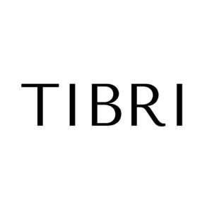

Trade Mark Journal No.2025/052 26 December 2025
UK00004310965 15 December 2025 (3,21)
Mark 1

Mark 2
TIBRI
- Class 3
- Eye shadow; Eye make-up; Eye shadows; Eye makeup; Eye cream; Eye creams; Eye concealers; Eye liner; Eye cosmetics; Eye pencils; Eye gel; Eye lotions; Eye sticks; Eye gels; Eye stylers; Eye make-up removers; Cosmetic eye pencils; Eye correction serum; Under eye correctors; Eye brightening correctors; Eye makeup remover; Eye wrinkle lotions; Cosmetics in the form of eye shadow; Cosmetic preparations for eye lashes; Cosmetic eye gels; Eye make up remover; Gel eye masks; Skin, eye and nail care preparations; Eyes make-up; Eye compresses for cosmetic purposes; Eyes pencils; Colour cosmetics for the eyes; Gel eye patches for cosmetic purposes; Eyelid shadow; Eye care products, non-medicated; Liners [cosmetics] for the eyes; Cosmetic creams for firming skin around eyes; Fragrance sachets for eye pillows; Creams (Non-medicated -) for the eyes; Eyelid pencils; Eyelid doubling makeup; Cleansing products for the eyes; Eyebrow mascara; Eyelash tint; Eyebrow colors; Eyebrow cosmetics; Eyebrow pencils; Pencils (Eyebrow -); Eyebrow gel; Eyebrow powder; Eyebrow styling wax; Eyebrows [false]; Cosmetics for eye-brows; Eyebrow colors in the form of pencils and powders; Self-adhesive false eyebrows; Eyelashes; Adhesives for affixing false eyebrows; Artificial eyelashes; Adhesives for false eyelashes, hair and nails; Cosmetics for eye-lashes; Eyelash dye; Eye-shadow; Eyeliner; Eyelashes (Cosmetic preparations for -); Cosmetic preparations for eyelashes; Eyeliner pencils; Wiping cloth impregnated with a cleaning preparation for cleaning eye glasses; Long lash mascaras; Mascara; Mascaras; Eyeliners; Eyelashes (False -); False eyelashes; Cosmetics; Eyelashes (Adhesives for affixing false -); Adhesives for affixing false eyelashes; Eyeshadow; Liquid eyeliners; Eyeshadows.
- Class 21
- Eye make-up applicators; Applicators for applying eye make-up; Eyebrow brushes; Eyebrow thread; Eyelash brushes; Eyelash combs; Eyeliner brushes; Mascara brushes; Eyelash Separators; Cosmetics brushes; Cosmetic brushes; Applicators for cosmetics.
TIBRI LTD